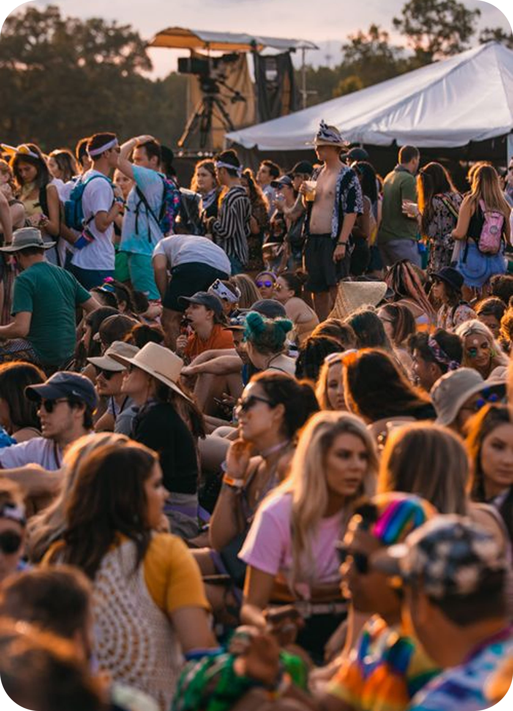
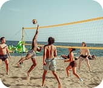
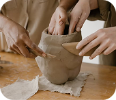
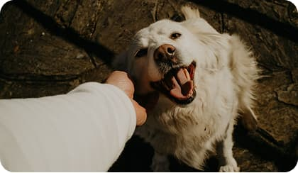
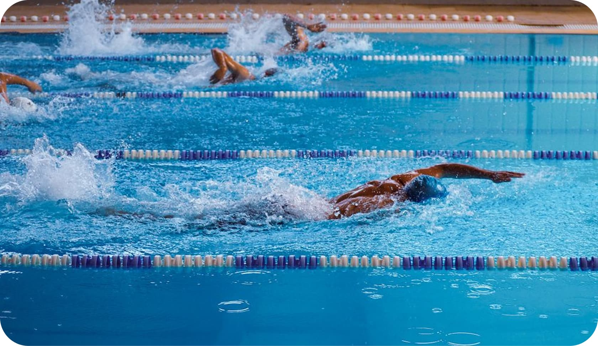
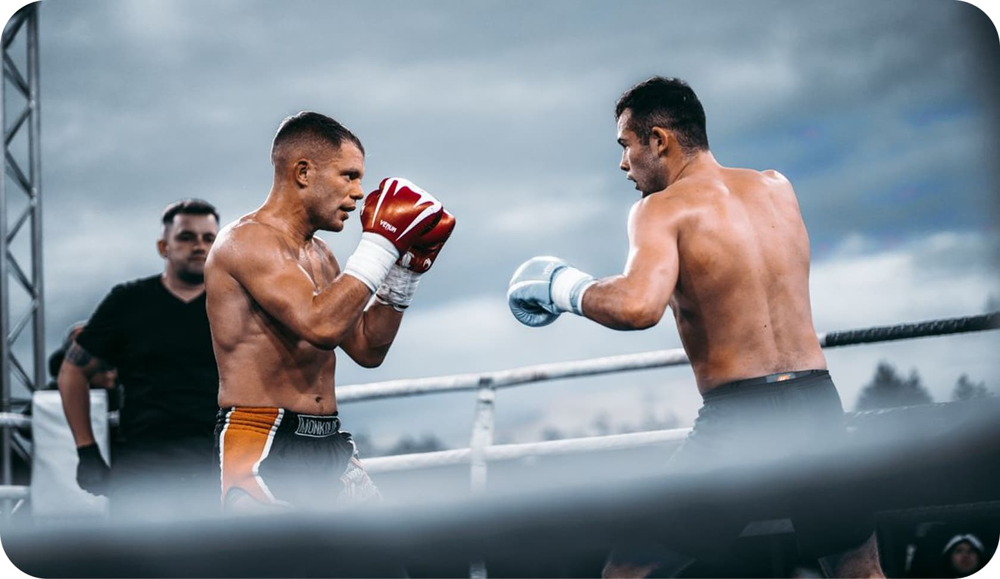
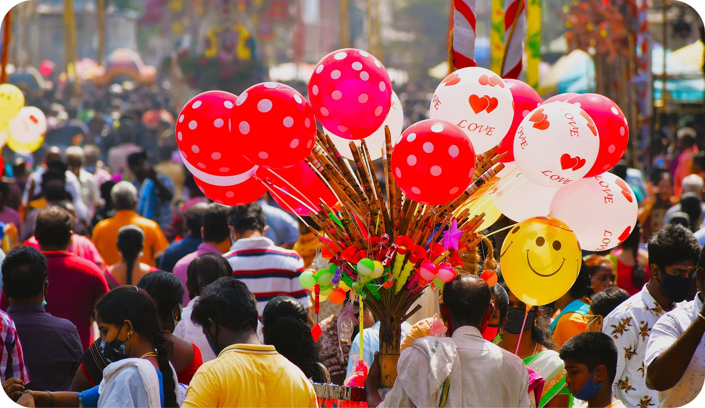
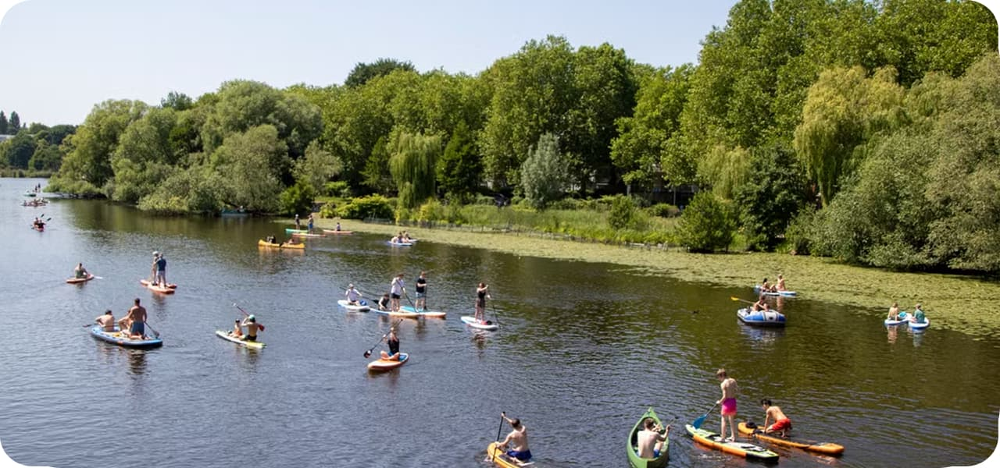
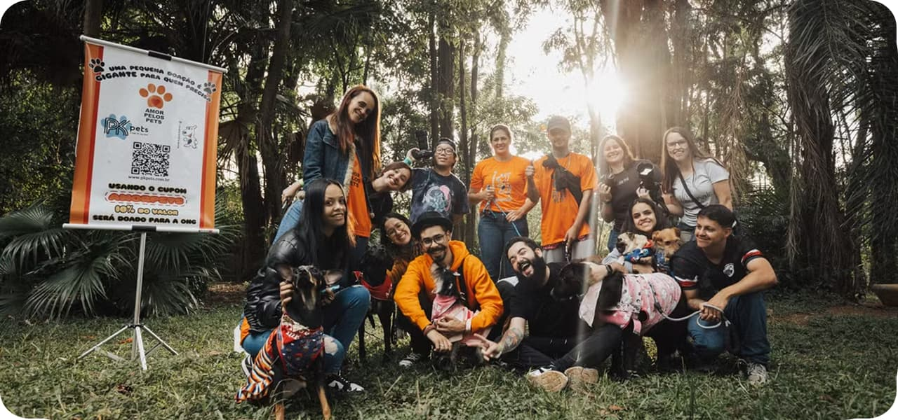

Про нас
Ми — спільнота, де ветерани знаходять підтримку, а суспільство — можливість висловити свою вдячність дією. Наш проєкт створений для того, щоб допомогти захисникам і захисницям повернутися до активного цивільного життя через соціалізацію, спорт, творчість та взаємодопомогу..
Це простір, де немає місця самотності. Тут збираються ветерани, професійні тренери, реабілітологи, активні студенти та небайдужі волонтери. Ми не просто допомагаємо — ми проводимо час разом, руйнуємо бар'єри та будуємо надійне дружнє плече для кожного.
НАША АКТИВНІСТЬ
Головний принцип наших активностей — це рівність та спільна участь. Волонтери та студенти тренуються, творять і навчаються пліч-о-пліч із ветеранами.
-

Волейбол
Детальніше -

Гончарство
Детальніше -

Взаємодія з тваринами
Детальніше -

Плавання
Детальніше -

Змагання по спортивній борьбі
Детальніше -

Фестивалі та свята
Детальніше
Останні новини
-

Мультиактивний день на річці
День активного відпочинку на природі з вибором занять: спорт, водний туризм та творчість.
Учасники розділилися за інтересами. На березі влаштували динамічні матчі з пляжного волейболу, на воді — плавали та вчилися веслувати на байдарках під наглядом інструкторів. Паралельно діяла спокійна зона, де на свіжому повітрі малювали картини фарбами. Зрештою всі зібралися разом для відпочинку та спілкування.
-

Зустріч із домашніми улюблeнцями
Тепла неформальна зустріч, присвячена спілкуванню та психоемоційному розвантаженню разом із собаками й іншими домашніми тваринами.
Учасники прийшли як зі своїми улюбленцями, так і просто провести час із тваринами. Разом гуляли на відкритому майданчику, грали з собаками в рухливі ігри, пригощали їх смаколиками та ділилися кумедними історіями про своїх вихованців. Подія пройшла у затишній, легкій атмосфері загального відпочинку.